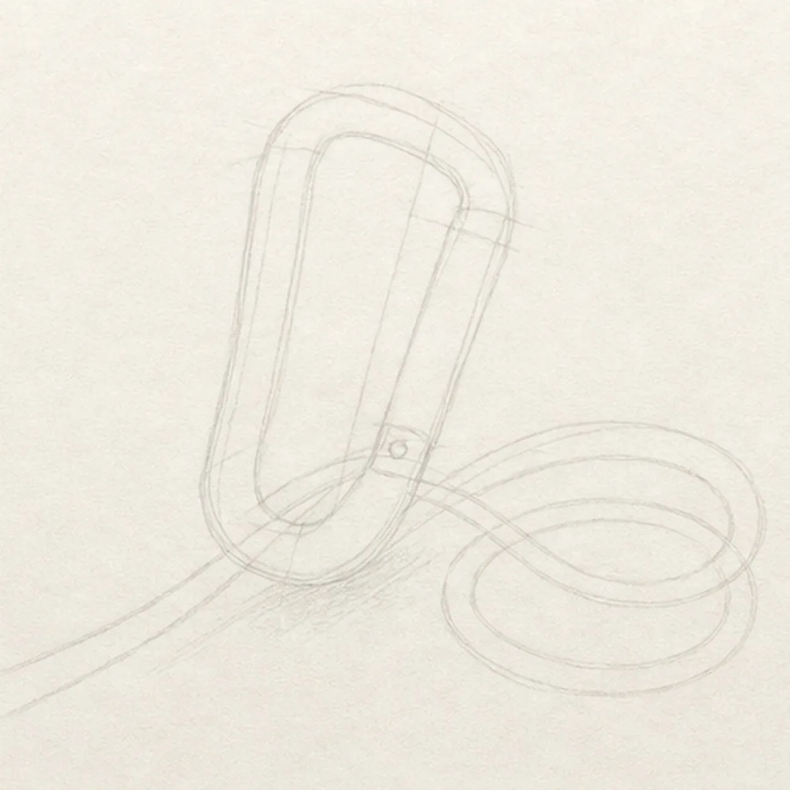
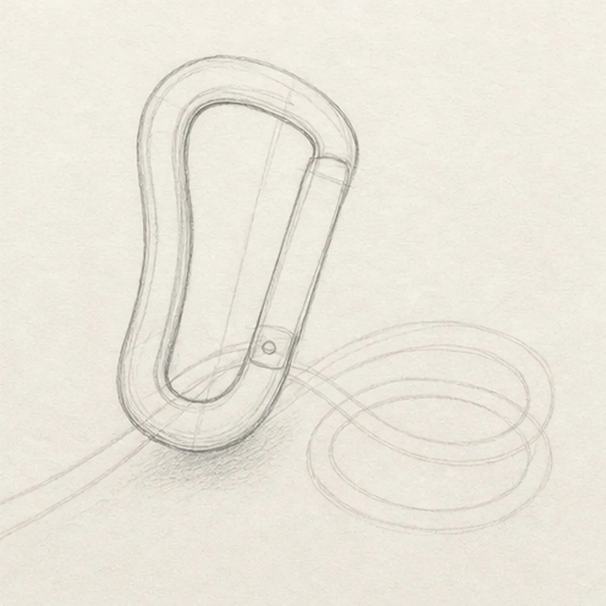
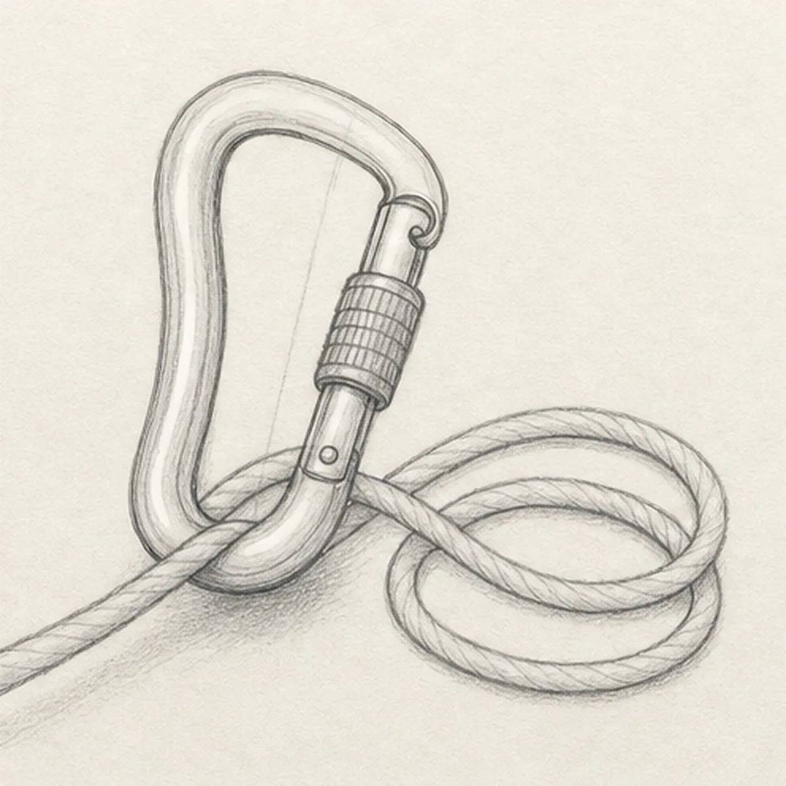
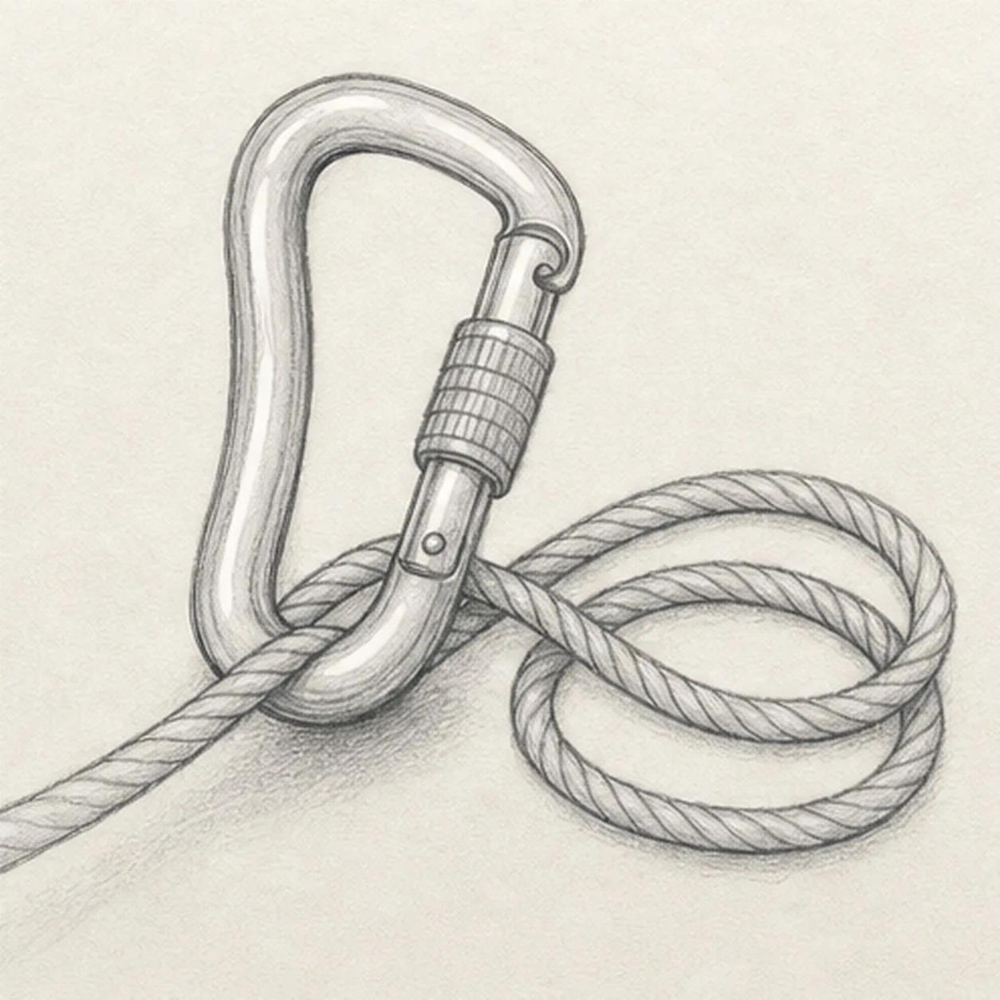
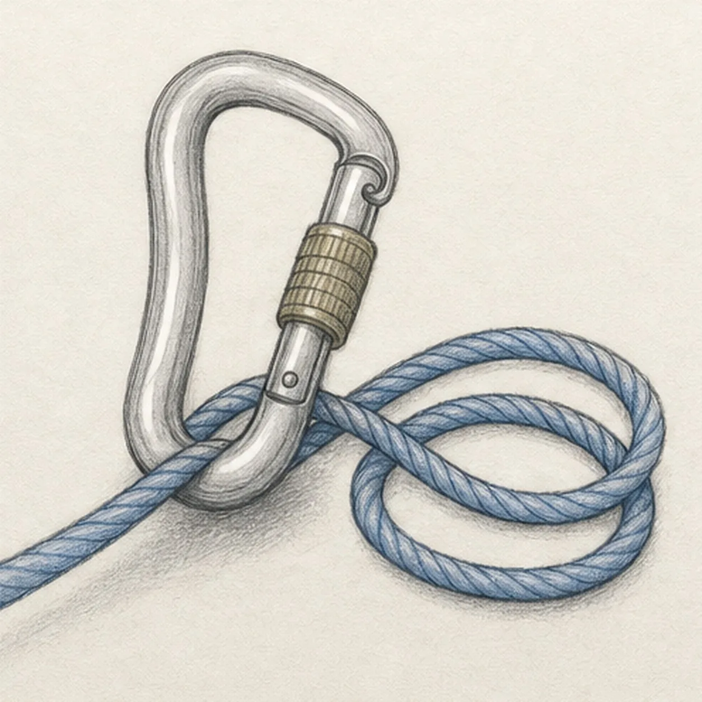

From the archive
Let's draw a climbing carabiner and rope
Treat this as one small practice round: build the subject lightly, notice the shapes, then darken only the lines that help the finished sketch.
-
01

Map the clip and rope
Draw a light pear-shaped frame and inner opening, place the gate axis, hinge, nose and screw-sleeve reserves, then route one continuous rope through the lower basket into exactly two loose coils and mark a shallow shadow zone.
Sketch tip: Ghost the carabiner tilt first, then trace the rope route with your finger from the left edge through the basket and around both coils. Keep the crossing and sleeve footprints pale instead of finishing lines beneath them.
-
02

Shape the carabiner
Wrap the guides with a thick pear-shaped frame, open center, straight gate, rounded basket, and narrow spine while preserving the same rightward tilt.
Sketch tip: Rotate the page for the long outside curve and pull it in one relaxed pass. Compare the frame thickness along the spine and basket without forcing perfectly mechanical edges.
-
03

Build the lock and rope
Add the gate hinge, hooked nose, ribbed screw-lock sleeve and grooves, then give the reserved rope path one consistent thickness, directional twist ridges, and exactly two loose coils.
Sketch tip: Keep every rope ridge leaning in the same direction as it turns around the coils. Count two open coil centers and confirm the rope remains one continuous strand.
-
04

Turn the metal forms
Draw exactly three long metal reflection lines, layer soft graphite around the established frame and sleeve, and deepen the single shallow cast shadow.
Sketch tip: Curve each reflection with the carabiner instead of drawing white ruler-straight stripes. Darken the underside of the basket a little more than the open upper frame.
-
05

Shade the climbing gear
Add graphite depth, restrained blue pencil to the established rope, cool gray to the frame and gate, and muted ochre to the screw-lock sleeve.
Sketch tip: Pull blue strokes along the rope twist and leave scattered paper tooth visible. Build the metal color lightly so the graphite reflections stay readable.
-
06

Finish the gear study
Strengthen the keeper contours and clarify the established frame, gate hardware, continuous two-coil rope, twist ridges, reflections, sleeve grooves, restrained color, paper highlights, and shadow.
Sketch tip: Trace the rope route once and count two coils and three main metal reflections, then stop. A hand, climber, cliff, harness, knot, logo, extra carabiner, or extra coil would turn this focused gear study into a different lesson.